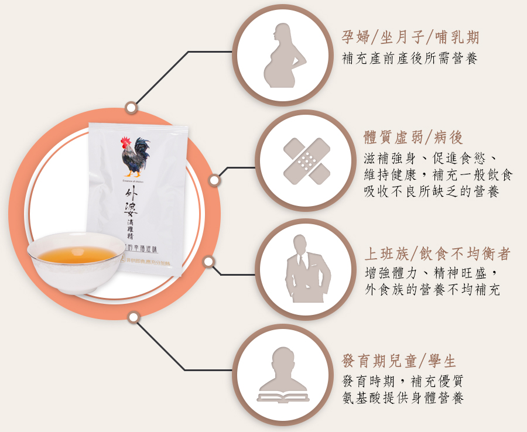
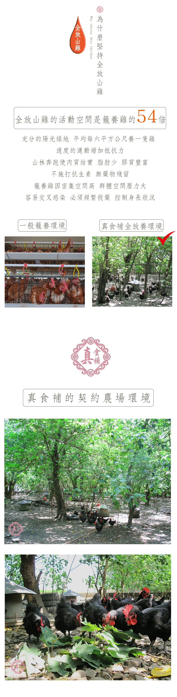

中式滴雞精，俗稱煉雞丹
以前的農村社會，富裕人家時常食用虎骨膠、滴雞湯，補充優質動物膠和蛋白質，但礙於保鮮技術不良，常常一次食用太多，身體無法完全吸收而形成浪費。理想的食用方式應該少量多次，更能達到補充營養、調整體質的目的。金牌大師滴雞湯以傳統作法、科學化的保鮮技術，將滴雞湯分裝保鮮，讓使用者天天好精神、好氣色。
適用對象
學生、上班族：增強體力、精神旺盛
兒童、老年人：滋補強身、促進食慾、維持健康
孕婦、產婦和病患：產前產後或病後之補養

外婆滴雞精使用什麼雞?
外婆滴雞精使用養殖自然成熟的台灣土雞，因養殖時間長， 無需施用生長激素，且肉質結實，滴出來的雞精品質好且量較多。一般肉雞只有飼養三十幾天，滴出來的雞湯多半是油脂，且品質不佳，不適合用來滴雞湯。

外婆滴雞精和傳統滴雞湯(煉雞膠)有什麼異同？
傳統滴雞湯(煉雞膠)因含太多油脂，且沒有滅菌處理，製成後細菌仍不斷滋生，所以冷藏也不可久放。喝傳統作法滴雞湯，因油脂多加上細菌滋生，常有胃腸不適問題。金牌大師滴雞精是用傳統滴雞湯(煉雞膠)作法製成後，去除大部分油脂且包裝滅菌，已經完全解決了傳統滴雞湯產生的問題。

一般人喝金牌大師滴雞精會不會胖？
不會。因為滴雞精已經將大部分油脂去除，每一份雞精的熱量不到1/10碗白飯，但是卻含有大量必須胺基酸，所以是很好的補品。
喝滴雞精有什麼限制？
痛風、高血壓和嚴重腎臟病的患者，食用前請先咨詢您的醫師。二歲以下幼兒因腎臟發育尚未完全，不建議食用。
食用時機？
建議每日早晨空腹食用，效果更佳。提醒有部分人於晚上食用，因精神較好，可能影響睡眠。
食用方法？
整包滴雞精投入熱水中，隔水溫熱1分鐘，打開即可食用。

營養成份是否有檢驗報告？
是的，八大營養成份已經依法令規定標示在包裝上。其他相關檢驗報告已公告於網站。